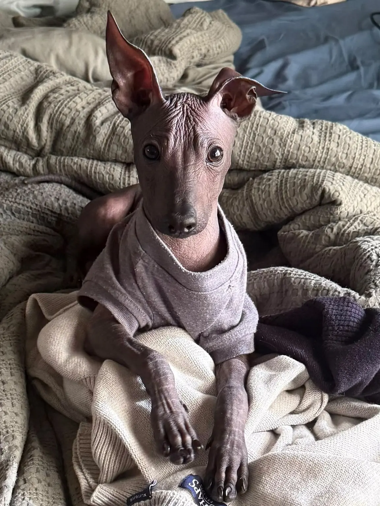
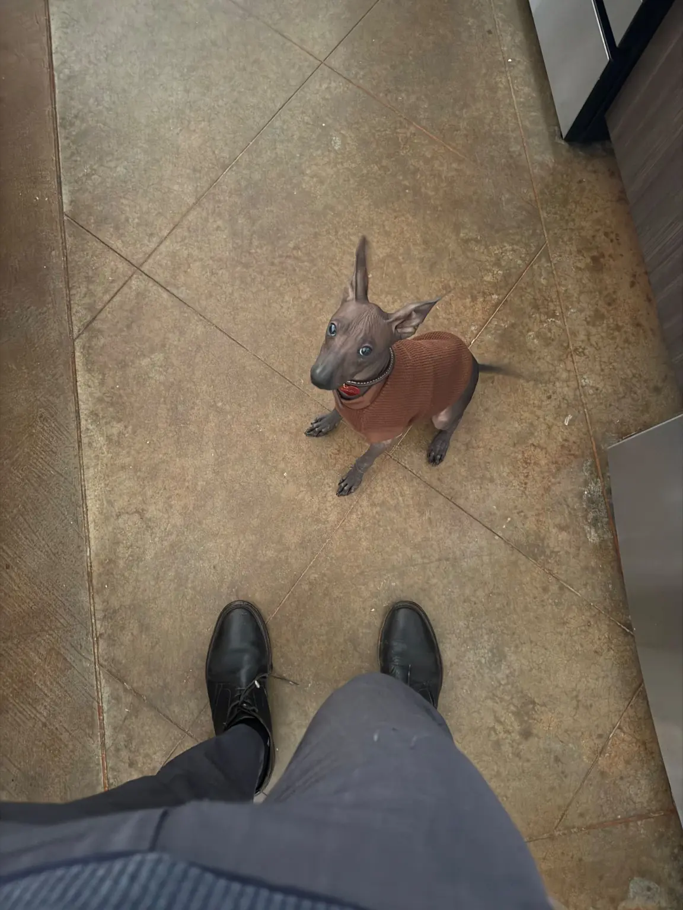
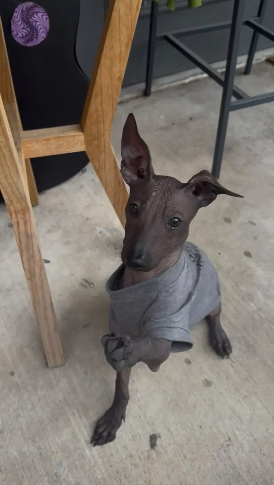
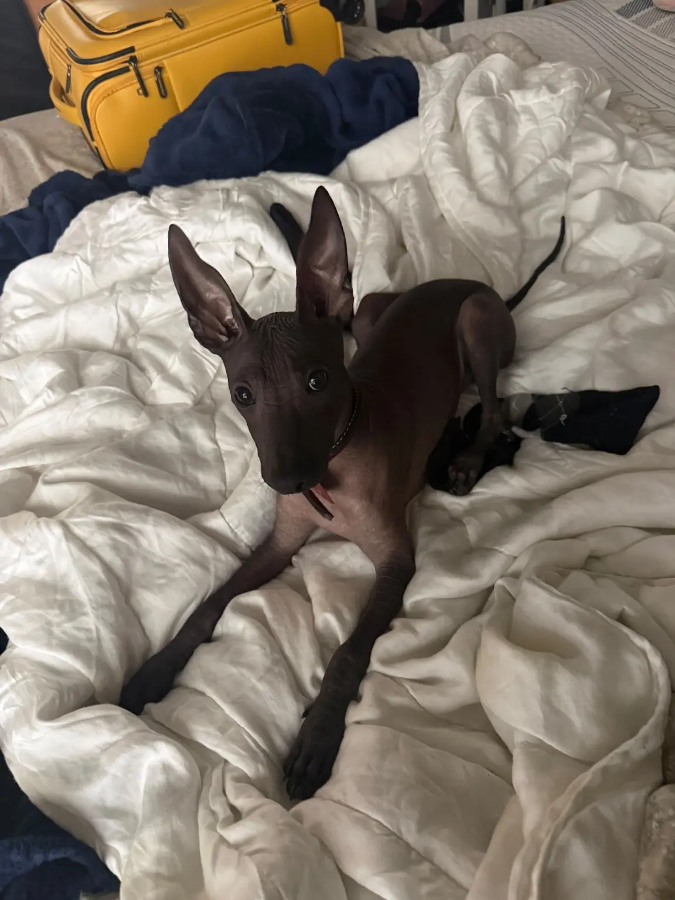
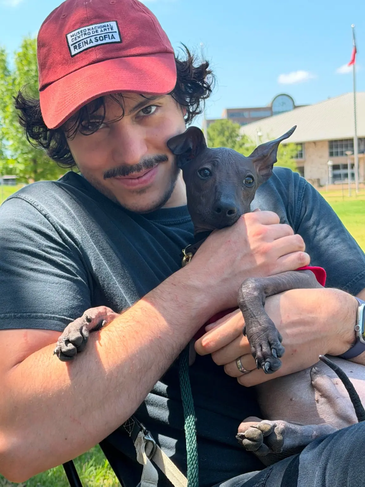

El día de hoy marca un hito muy especial para la familia de Xolos Ramirez. Tuvimos el inmenso honor de entregar al precioso cachorro Onix Ramirez a su nueva familia: Adrián y su esposa. Fue un momento lleno de emoción, ternura y, sobre todo, una profunda conexión.
Un encuentro lleno de ternura
Desde el primer instante en que Onix llegó a los brazos de su nueva mamá, la química fue innegable. Como quedó documentado, nuestro pequeño Xoloitzcuintle se mostró sumamente dócil y relajado. Envuelto en su suave cobija, Onix cerraba los ojitos, dejándose consentir y demostrando la enorme confianza y tranquilidad que sintió al conocer a su nueva familia.
Tradición milenaria impulsada por tecnología Web3
En Xolos Ramirez, no solo nos dedicamos a preservar esta hermosa y milenaria raza mexicana, sino que también miramos hacia el futuro. La entrega de Onix no fue solo física; también fue digital.
Durante la entrega, guiamos a Adrián paso a paso para crear su propia Tonalli Wallet. Una vez configurada, realizamos la transferencia oficial del NFT de linaje de Onix.
¿Por qué un NFT de linaje?
Al registrar el linaje de nuestros Xoloitzcuintles en la blockchain, garantizamos un certificado de autenticidad inmutable, seguro y moderno. La transacción de Onix quedó registrada permanentemente en el Xolos Explorer, asegurando su herencia digital para la posteridad.

Le deseamos a Adrián y a su esposa una vida llena de alegrías y aventuras junto a Onix. Sabemos que este pequeño ha llegado a un hogar donde recibirá todo el amor que se merece.
¡Bienvenido a casa, Onix!
— Onix creciendo con su familia
Semanas después de aquella entrega, Adrián Castellanos compartió con Xolos Ramirez nuevas fotografías de Onix en su hogar. Las imágenes muestran cuánto ha crecido desde el encuentro del 18 de julio y forman parte de la continuación de su historia junto a su nueva familia.
Para Xolos Ramirez, la historia de cada cachorro no termina el día de la entrega. Verlos crecer, saber cómo se integran a sus hogares y mantener el vínculo con sus familias forma parte de la memoria viva de cada xoloitzcuintle que hemos acompañado.
Adrián y su esposa también fueron invitados a participar junto con Onix en una próxima edición de The Xolos Ramirez Show. En una conversación en inglés, compartirán su experiencia de vida con él: su adaptación, su personalidad y las historias que han construido juntos.





— Onix Ramírez en The Xolos Ramirez Show
Adrián Castellanos y su esposa participaron junto con Onix Ramírez en una conversación en inglés para The Xolos Ramirez Show sobre su experiencia de vida con él en Texas. El episodio completo fue grabado con su familia y publicado sin ediciones.
Durante el episodio, Adrián y su esposa recuerdan los primeros días de Onix en casa: primero se mostró tímido y, en poco tiempo, comenzó a expresar la energía de un cachorro. También hablan del fuerte vínculo afectivo que ha formado con su familia, de cómo duerme con ellos desde sus primeras noches y de la manera en que se comunica mediante la mirada y el lenguaje corporal.
La conversación recorre aspectos de su vida cotidiana, como los cuidados que su familia brinda a su piel, el uso de ropa cuando hace frío y su gusto por tomar el sol. También comparten su proceso de socialización con personas y otros animales, incluida la convivencia con la gata de la familia, así como los juegos y el entrenamiento que realizan mediante refuerzo positivo.
Desde la experiencia personal de su familia, vivir con Onix también representa una forma de preservar y compartir en Texas la historia de una raza ancestral mexicana. Este episodio continúa la memoria de su entrega y permite conocer, directamente a través de Adrián y su esposa, cómo sigue creciendo su historia juntos.